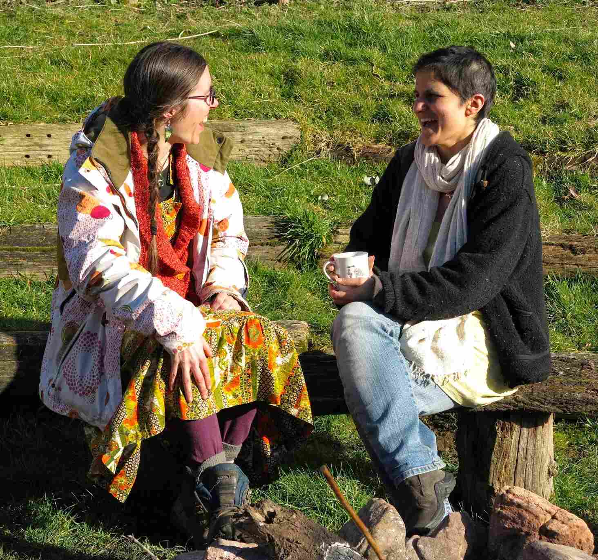

IPCUK Neighbourhoods Design - Draft 1
The vision for this design is to take the sleeping and eating sectors of IPCUK Convergence and to design them as neighbourhoods - self-organising, community building, supporting everyones wellbeing, supporting and extending learnings and integrating seamlessly with the rest of the convergence. They will be key demonstrations of People Care at the convergence and this design will be made as transparent and accessible as possible to maximise the potential for learning and sharing.
This is the first draft of the design collaboratively produced by a small design team via skype and google docs. We already have a list of further things to investigate, decide and integrate in, but this is the first flavour so that we can share it with everyone and get feedback. Nothing in here is definitely decided.
Neighbourhoods Pattern
Neighbourhoods will consist of around 150 people, supposedly the number of people we can remember in one go, which will mean there will be 4-6 neighbourhoods at the convergence. Each neighbourhood will have a designated area of the site and facilities. Attendees will on the whole be able to choose which neighbourhood they join, including those staying off site.
 Each neighbourhood will have a totem animal, relating to an ecological niche rather than a species so that it translates internationally (e.g. hawk) and a colour. These will be used on site maps, facilities, sign posts, landmarks etc to enable easy identification. The paths across the site will be colour coded to aid navigation.
Each neighbourhood will have a totem animal, relating to an ecological niche rather than a species so that it translates internationally (e.g. hawk) and a colour. These will be used on site maps, facilities, sign posts, landmarks etc to enable easy identification. The paths across the site will be colour coded to aid navigation.
There will be some pattern to the neighbourhoods, the details of which will be designed once the overall convergence site plan is finalised. Depending on the final site layout some neighbourhoods that are more remote from the lodges may be primarily for camping self catered attendees.
And within each neighbourhood there will be a gradient of night owls/early birds from the main entertainment venues on site, community spaces within the neighbourhoods and major through routes. We will also recommend that people locate themselves according to their preferences for distance from facilities & access etc.
Each neighbourhood will have a tall landmark in it, to allow people to orientate themselves easily. This will be located towards the main workshop area side of the neighbourhood. In the vicinity of the landmark will be an information board with fixed information (not updated), including local walk info, site maps, nearest facilities, contact details for the neighbourhood co-ordinator, emergency numbers, key to symbols language (explained later) in multiple languages, neighbourhoods self organisation resources such as a white board, and an outline of the neighbourhoods design.
There will be additional, manned and dynamic/updated information boards in lodges (or other more central points) these will include offers/request boards, attendees project info sharing, feedback/ challenge busting.
Across the convergence site there will be a consistent set of symbols used rather than wording on signage. There are already a range of internationally recognised ones for things like toilets and then some more will need to be agreed. This will allow there to be one site map for everyone colour coded and with symbols and then a key to the symbols translated into all necessary languages.
So at the landmark and potentially various other points there will be signposts using the symbols which direct people to the nearest facilities.
Each neighbourhood will aim to have 2 or more community spaces (depending on what we can source), which will serve a range of functions and at least one of these will be a fire pit, a weatherproof space, an alcohol free zone, a quiet space and there will be at least one ‘unbooked’ community space at each time that doesn’t have a pre-organised activity going on in it.
Within the neighbourhoods the tents will generally be arranged in home circles, camping circles of 6/7 tents with a brazier or other focal point in the centre. Each lodge will consist of one or more home circles and off site attendees will also be organised into home circles if they want to be. The home circles will hopefully act like the spokes of the neighbourhood hub allowing easier flow of information and greater connection. People can check in with/ buddy the others in their home circles, and this will ensure there are at least a few other people who you have a connection to at the convergence from the start.
Each day there will be a question posed, which could be considered in the home circles, eg. Share the stories of what has brought you here. Of course it will not be compulsory to be in a home circle, but it is hoped that they can provide a family scale support network to compliment the neighbourhood level support.
There will also be moveable ‘hands on sticks’ given to each circle so they can move them from thumbs up, to neutral, to thumbs down depending on the wellbeing of their home circle. This allows others, particularly crew to easily identify issues that might need addressing.
Morning circle
Each morning there will be a gathering within each neighbourhood, at a time as yet to be decided. Participants will not need to speak to the whole neighbourhood if they are not comfortable with it, don’t worry introverts!
Morning circles will be facilitated by participants, as there will be many experienced facilitators present, but there will be a fairly set format. We will ask for volunteers for this at the early stages of the convergence.
This daily gathering will allow space for:
-
Announcements, such as changes to the timetable
-
A brief check in with each home circle that all is well & potentially time during morning circle for discussion in the home circles
-
Learning reflections/story sharing in pairs or small groups
-
Sharing gratitude, in pairs and then a few shared with group
-
Sharing and addressing challenges - share/request opportunity (can be also done through home circles or other routes)
-
Cleaning/Waste/Watchperson rota reminder
-
Sharing daily neighbourhood informal entertainment plans/ideas, which then lets people self-organise.
-
Informal entertainment could include:
-
organised walk times
-
story telling/sharing
-
cultural sharing
-
open space opportunities
-
-
Cleaning system
One of the functions of the neighbourhoods is to make sure that the facilities, communal spaces, dining rooms etc get looked after and cleaned regularly to support health and wellbeing. To enable this, there will be a designated daily cleaning blitz time and a daily cleaning rota/sign up sheet for each neighbourhood so people can put themselves down for the tasks which suit them. These will include cleaning the:
-
dining room
-
washing up station
-
communal areas in neighbourhoods
-
main workshop areas
as well as:
-
an appreciation role - to go around showering appreciation and gratitude on all the hard workers
-
an entertainment role - to provide entertainment for the cleaners
-
taking rubbish and recycling to the central collection point
-
collecting firewood for the neighbourhood
There will be a longer cleaning blitz time on the final day, but it will follow the same pattern as the previous days, although it might have a few additional roles too.
We also want to ensure that there are efficient, hygienic washing up stations. The process will be:
-
Scrape leftovers into slops bucket
-
Rinse items in the first basin
-
Wash items in the second basin that contains hot soapy water
-
Disinfect items in the final basin that has hot water with citricide in it
-
Dry items with the tea towel you have brought with you
-
Take them away and put them somewhere safe
Attendees will be bringing their own crockery and cutlery so we feel there is less room for challenges if they take them away with them, so we recommend bringing a tea towel to dry with too. We will also request that attendees bring some spare crockery and cutlery in case anyone forgets, loses theirs etc.
There will be at least two washing up stations for each lodge as well as two stations in each self-catering area - one for pots and the other for crockery and cutlery.
Waste system
There will be clearly labelled recycling, compost and landfill bins in each neighbourhood and at canteens. There will be roles on the volunteer rota for emptying these in each neighbourhood and taking them to the central collection points. We hope that by doing this regularly we will keep the neighbourhoods hygienic and discourage animals from spreading ‘waste’ around. We will collect some pre-decided recycling for making into art projects in the neighbourhoods.
Pre-convergence system
Information will be sent out to all participants prior to the convergence. This will include information on the neighbourhoods and how we envisage them working, a recommended list of what to bring and a wish list of resources we need to make the neighbourhoods awesome.
The to bring list will include:
-
crockery and cutlery and mug
-
tea towel
-
bedding
-
tent if applicable
-
blankets/cushions for sitting on the floor and in evening
-
torches
The wish list will include:
-
Community structures, such as gazebos/marquees/yurts etc for providing weatherproof camp cooking and social spaces
-
Decorations for the neighbourhoods
-
bunting
-
solar/battery powered lights
-
cut flowers & natural materials
-
pumpkins
-
-
Spare crockery etc to lend out
-
Spare tents or camping bits to lend out, such as sleeping bags, groundsheets, guy ropes
-
Entertainment equipment
-
games
-
instruments
-
We are going to create a survey where attendees can share what they are going to bring with us, allowing us to co-ordinate and plan. We are also hoping it will be a chance for clarification, feedback and tweaks to the neighbourhoods plan.
Safety system
There will be a couple of rooms in the lodges which can be used as long term secure storage for the duration of the convergence, so valuables can be put in at the start and retrieved at the end. We are also going to investigate further options for shorter term secure storage, such as for a day, however, this is likely to require a lot of person hours to run.
Although we don’t envisage there being big security problems at the event, to add another layer of security there will be a rota of volunteer watch people. We still want to explore the ins and outs of night watch people, but during the day there will be 3 positions on the rota for each workshop slot, which will allow volunteers to stack in pause or connection time depending on what they need. So you can block out the other two positions and just do it yourself if you want pause time or there will be 2 or 3 people on, who can chat with each other. All watch people will get a safety briefing.
Transparent design system
We really want to use this opportunity to make the designing of the neighbourhoods really explicit and transparent, allowing people to experience a permaculture design in action. So to support this there will be:
-
a design summary on neighbourhood notice boards
-
an open discussion session/workshop on the design as part of the programme
-
putting principles and/or design notes on relevant designed points to make people think
-
sharing the design with attendees before the convergence allowing for feedback and to inform people of what is going to happen
-
Put the design, including details of the process on the blog/website
-
Kerry will be sharing her design for the co-ordination of this design(!) in her accreditation
Feedback loops system
As part of making the neighbourhoods self-organising we want to build in feedback loops that allow challenges to be addressed and positives supported as an ongoing process throughout the event. These will integrate with wider processes for this across the whole convergence.
These will include:
-
Space for feedback in the morning circles
-
Addressing challenges - share/request opportunity
-
Home circles check in both in the morning circle and with their thumbs up/down
-
-
'Manned' (at certain times) information in lodges
-
Dartboards for on the spot feedback in the lodges & toilets
This is the first draft of this design, so we welcome all feedback, perspectives and further ideas which we can build in. Please share them here https://www.surveymonkey.com/s/YFRYHZG